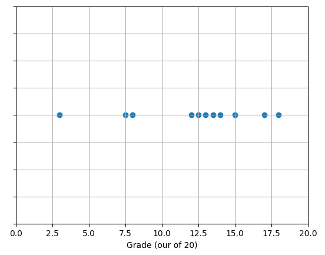
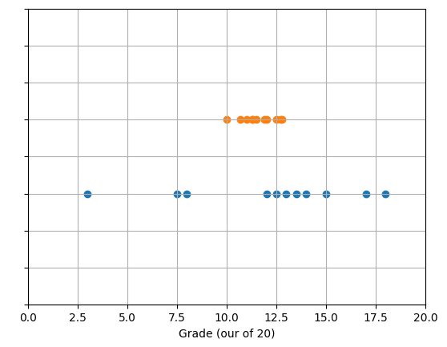
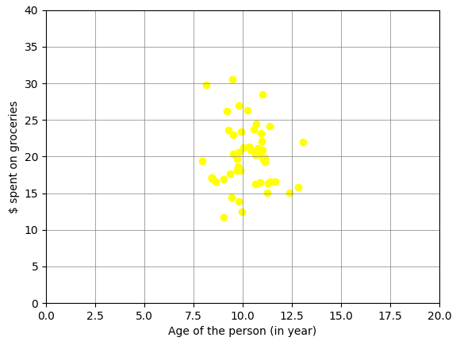

"It all begins with a simple picture and its subject. The later, lost in the image can't seem to find its direction. As it yells for help, a bold hero emerges from the land of mathematics to rescue him, and his name was PCA."
All jokes aside, Mathematics tends to have a beautiful relationship with image processing, and PCA & image tracking is one remarquable example. In today's post, we'll try to understand the intuition behind PCA and its application in image processing to find an object's direction.
Let set our problem in the middle of a parking lot with one parked red car.
Our goal here is to find this car's direction and position and further, track those 2 values over time (if we take a video of the moving car as an input)
Therefore, our first task would be to isolate the pixels that are meaningful to us, here the car's pixel. There exist many methods to do so, like Otsu Thresholding, K-Segmentation, Canny Edge Detector, or even Blob Detection. The only issue with these algorithms is that we still have to manually point which part among the isolated parts is the one we want to track. This can be easily overcomed with any kind of classification algorithms. (link to lipton or AI classifier)
However, if we take as an input a video where the background is static, isolating the moving element can be easily done with the algorithm described below.
Before going any further, we need to introduce and understand some very useful statistical tools.
Let say you are looking at the grades students got at their last exam. Those grades are saved in a 1D-array, which you can plot on a single line.
Now we ask ourselves the following question: how can we compute how well the students performed on this test ? The first idea would be to compute the grade's mean value with the following formula.
$$\large{\bar{x} = \frac{1}{n}\sum_{i = 1}^n x_i}$$However, this value isn't relevant enough on itself to display how well the students performed because the same mean can be obtained by those two very different distributions:
So, to really get a picture of the classroom's performance, you also need to compute how the grades distribute around the mean value: that is Variance.
$$\large{Var(X) = \color{orange}\frac{1}{n} \color{green}\sum_{i = 1}^{n} \color{red} (\bar{x} - x_i)\color{blue}^2}$$To construct variance, we compute for each point its "error" relative to the mean value. We then square this new value and sum them. Squaring the error of each values first assure that all the terms are positive (and thus that none of them are going to cancel each other out), but mostly, it allows to "penalize" the biggest errors. Finally, we divide the total by the number of points in the array.
Now, let's say that you are looking at two sets of data that are linked, for instance the age of a person and the amount of money they spend on groceries. Those data can be saved in a 2D-array, or ploted on a 2D plane.
If variance told you how the values distributed around their mean value, then covariance of distributions \(X\) & \(Y\) tells you how variations in distribution \(X\) affects distribution \(Y\)(and vice-versa).
Covariance formula doesn't really differ from variance's one, only that instead of squaring each error term for one distribution; for each point, we multiply the \(X\) error term with \(Y\)'s error term.
$$\large{Cov(X,Y) = \frac{1}{n}\sum_{i = 1}^{n}(\bar{x} - x_i)(\bar{y} - y_i)}$$Silly but important fact: \(Var(X) = Cov(X,X)\)
Now, let's go back to our red car in a parking lot picture. What we want to compute is the direction and position of this cloud of pixels. But now that we know about variance and covariance, we can consider that cloud of pixels to be two joint distributions (the distribution of the x-coordinates, and the one of the y-coordinates). Therefore, computing their variances and covariances will tell us how a change in the x-axis distribution affects the y-axis distribution (and vice versa), which is another way to formulate a direction !
So now the problem boils down to: how to compute the direction of our "pixel blob" only from variance and covariance ?
The answer is to "throw" our covariances into a matrix and compute its eigenvectors. If you are not familiar with linear algebra, those words might seem overwhelming; and if you are, you might not see the intuition behind the process. In both cases, the next paragraphs will explain everything.
A matrix can be written as an array of values. Matrices can be of any shape but the most common and useful ones are square matrices. Here, we will only look at 2x2 matrices.
$$\large{ \begin{pmatrix} a & b \\ c & d \end{pmatrix} }$$ $$\textrm{Example of a simple 2 by 2 square matrix}$$Now, let's picture a 2D-plane where vectors can be drawn. These vector can be represented as a 2-by-1 array containing their \(x\) and \(y\) coordinates. But most importantly, you can think of each points of the plane as being the vector going from \((0,0)\) to its coordinates.
Now if you want, you can create a function (or linear map) \(f\) that takes as an input a vector \(V\) and gives as an output \(f(V)\):
\begin{gather} \large f : (x,y) \rightarrow \begin{pmatrix} x + y \\ 2x - 3y \end{pmatrix} \end{gather}While this definition of a linear map works very well, another way to represent it is by building one of its representative matrices.
$$ \text{Let } B = (x_1,x_2) \ \text{where } x_1 = \begin{pmatrix} 1 \\ 0 \end{pmatrix}, x_2 = \begin{pmatrix} 0 \\ 1 \end{pmatrix} $$ $$ A = (f(x_1),f(x_2)) = \begin{pmatrix} 1 & 1 \\ 2 & -3 \end{pmatrix} $$So now, to compute the output of a vector throught the linear map \(f\), you only have to multiply the vector by the linear map's representative matrix:
\begin{gather} \large \text{Let } v \in E, \text{ then: } A \cdot v = f(v) \end{gather}Therefore, matrices can be thougt of as transformation operators that can shift an "object" shape and orientation.
↓ Change the matrix and watch the shape change ↓But now, what are eigenvectors? Well eigenvector are defined by the following expression:
$$\large{ \begin{gather} A \cdot V = \lambda V \\ V \in \mathbb{R}^n \setminus \{0\}, \quad A \in \mathcal{M}_{n,n}, \quad \lambda \in \mathbb{C} \end{gather}}$$If \(V\) is a non-null eigenvector of the matrix \(A\), and \(\lambda \) a real or complex value, then passing \(V\) througt \(A\) doesn't change \(V\)'s orientation but only its magnitude and direction by a factor of \(\lambda\), which we call an eigenvalue.
Now, if we take back the example above and we decide to highlight in red the eigenvectors of the matrix, we can see that they are the only vectors that do not move but only extend.
↓ Change the matrix and watch the eigenvectors ↓One last important fact about square matrices is what we call the spectral theorem. This theorem states: \begin{gather} \text{Every real symmetric matrices are diagonalizable} \\ \text{and their eigenvectors are 2 by 2 orthogonal} \end{gather}
To put it in a nutshell, this means that every real symmetric matrices have eigenvectors and especially that those vectors are orthogonal, and that the matrix transform the space along those eigenvectors.
Now, let's go back to our variance and covariance. Like we've seen before, variance and covariance tells us how a cloud of point is shaped. Thus, thanks to our understanding of linear algebra, we can define the covariance matrix as followed:
$$ \large{ C_{X,Y} = \begin{pmatrix} Cov(X,X) & Cov(X,Y)\\ Cov(Y,X) & Cov(Y,Y) \end{pmatrix} = \begin{pmatrix} Cov(X,X) & Cov(X,Y)\\ Cov(X,Y) & Cov(Y,Y) \end{pmatrix}} $$This covariance matrix can be thought as the transformation that will "shape any circle distribution" into the distribution that defined the covariance matrix.
Thus the eigenvectors of the covariance matrix give us the axis along which the transformation happens also called direction (because \(C_{X,Y}\) is a real symmetric matrix).
↓ Draw a filled shape to find its direction ↓